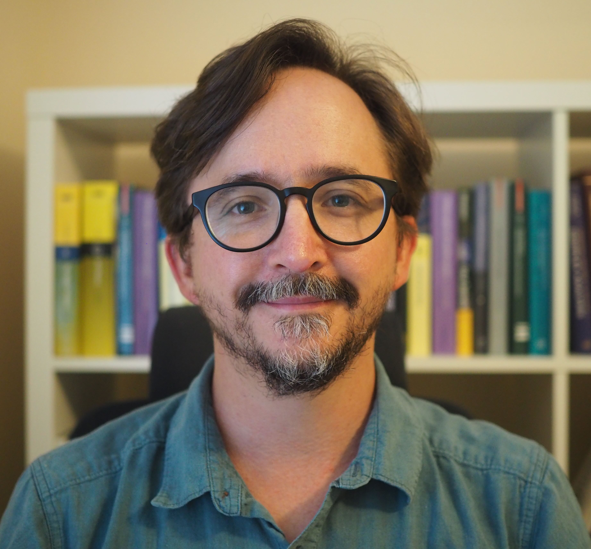
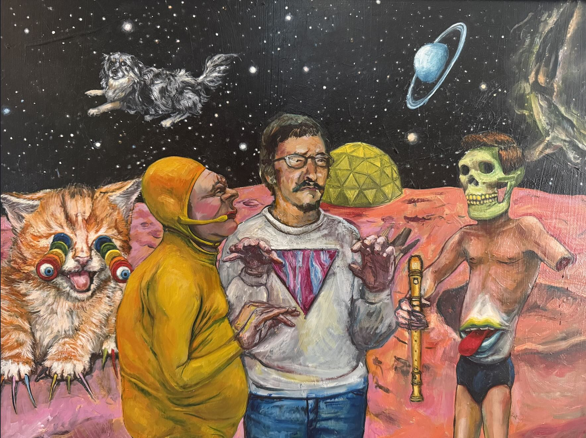
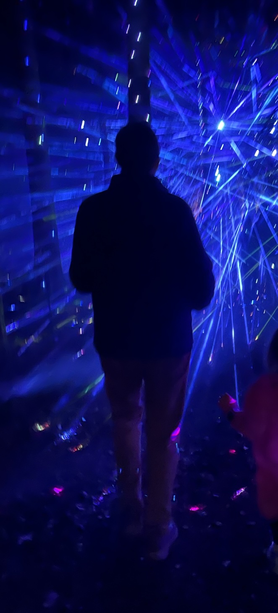
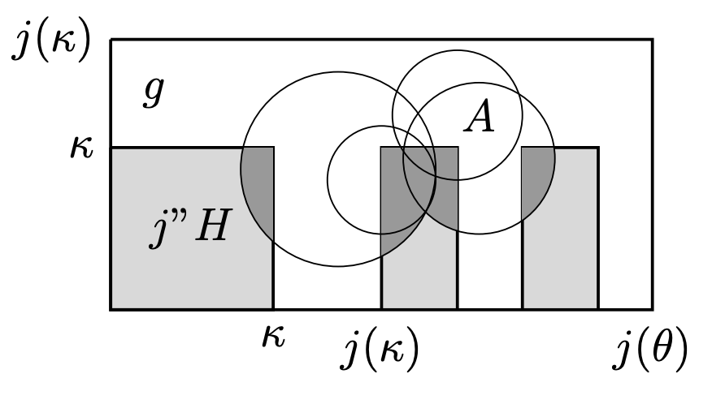
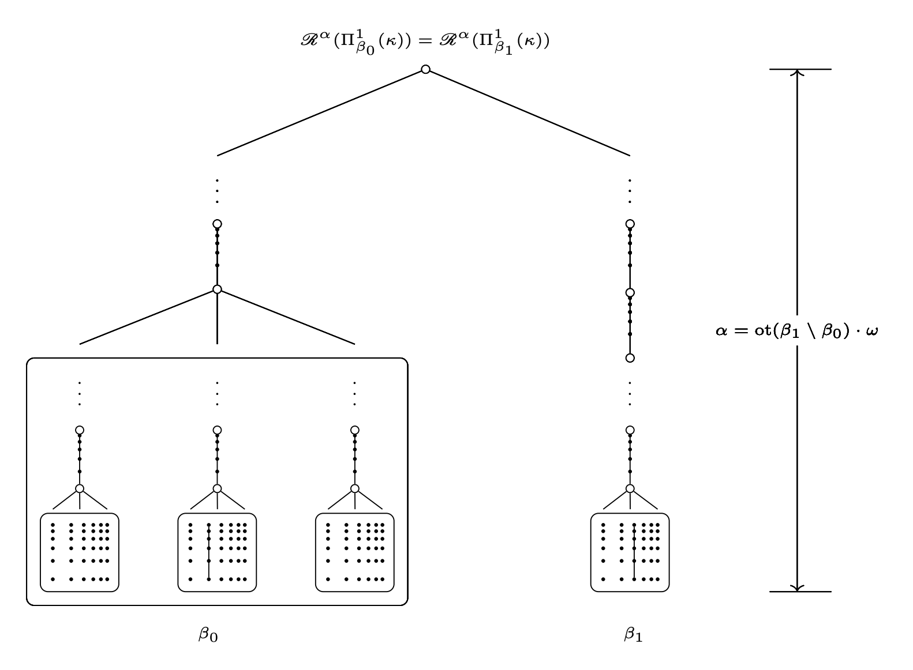
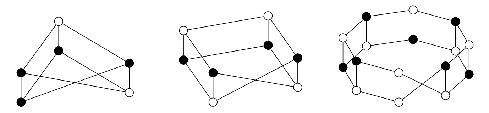
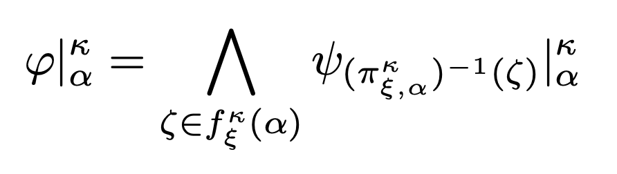
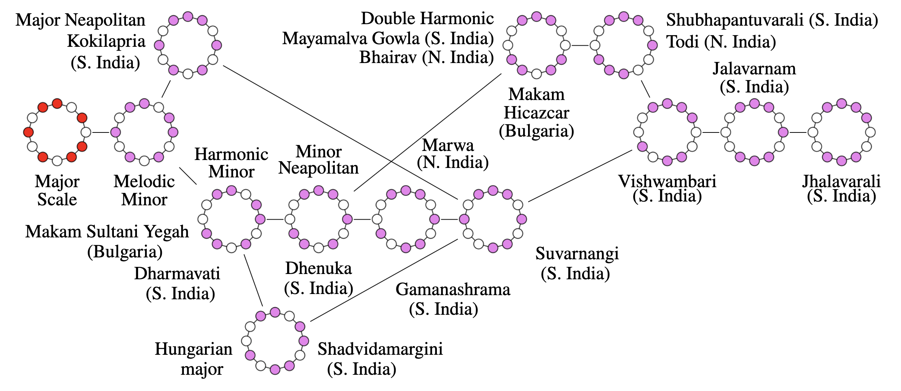
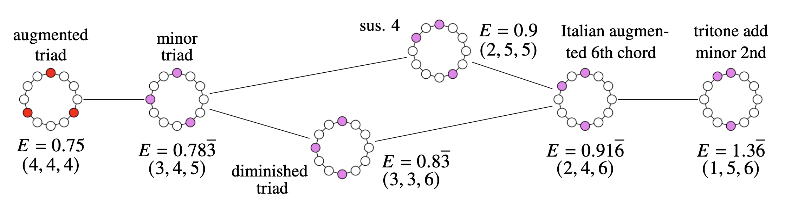
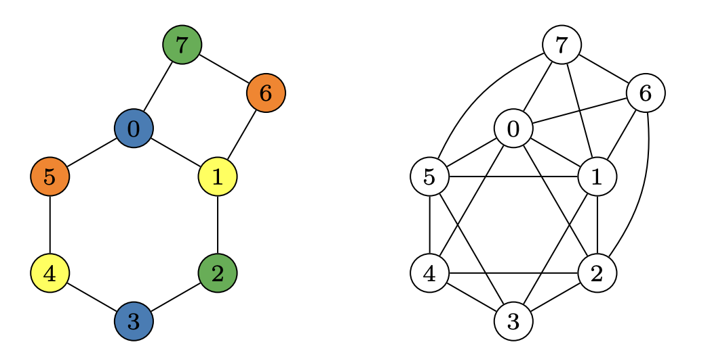

Brent Cody
Associate Professor, Department of Mathematics and Applied Mathematics
Virginia Commonwealth University
email: bmcody@vcu.edu cv: Cody_CV_2026.pdf
Research Overview
My primary research interests are in set theory, with emphasis on large cardinals and forcing. Alongside this work, I also work on problems in graph theory, which stemmed from an interest in connections between mathematics and music theory, specifically, maximally even sets and Euclidean rhythms, as discussed in [20] and [21] below.
- Sean Cox and I organized a MAMLS meeting at VCU (April 2017), thanks to Arthur Apter.
Papers
In preparation
- [a]Diagonal hypersquares. (with Joan Bagaria) In preparation.
- [b]Metric general position graph invariants and graph powers. (with Rose Detore) In preparation.
Submitted & published
- [25]Metric general position extensions of classical graph invariants and perfection. (with Rose Detore) Submitted [pdf]
- [24]The Wiener index of vertex colorings. (with Viktoriya Bardenova, Neal Bushaw, Paul Fay and Maya Tennant) Submitted [pdf]
- [23]
- [22]The \(k\)-general \(d\)-position problem for graphs. (with Garrett Moore) Discrete Applied Mathematics, 366: 135–151, 2025. [pdf]
- [21]Sets of vertices with extremal energy. (with Neal Bushaw and Chris Leffler) Discrete Mathematics, 348 (7): Paper no. 114466, 2025. [pdf]
- [20]The Music and Mathematics of Maximally Even Sets. (with Neal Bushaw, Luke Freeman and Tobias Whitaker) Proceedings of Bridges 2024: Mathematics, Art, Music, Architecture, Culture: pp. 61-68. [pdf]
- [19]Two-cardinal ideal operators and indescribability. (with Philip White) Annals of Pure and Applied Logic, 175 (8): Paper No. 103463, 17 pp., 2024. [pdf]
- [18]Higher indescribability and derived topologies. Journal of Mathematical Logic 24 (1): Paper No. 2350001, 48 pp., 2024. [pdf]
- [17]
- [16]Sparse analytic systems. (with Sean Cox and Kayla Lee) Forum of Mathematics, Sigma, Paper No. e58, 9 pp., 2023. [pdf]
- [15]Ideal operators and higher indescribability. (with Peter Holy) Journal of Symbolic Logic, 88 (2):835-873, 2023. [pdf]
- [14]Forcing a \(\square(\kappa)\)-like principle to hold at a weakly compact cardinal. (with Victoria Gitman and Chris Lambie-Hanson) Annals of Pure and Applied Logic, 172 (7):102960, 26 pp., 2021. [pdf]
- [13]A refinement of the Ramsey hierarchy via indescribability. Journal of Symbolic Logic, 85 (2):773-808, 2020. [pdf]
- [12]Characterizations of the weakly compact ideal on \(P_\kappa\lambda\). Annals of Pure and Applied Logic, 171 (6):23 pages, 2020. [pdf]
- [11]The weakly compact reflection principle need not imply a high order of weak compactness. (with Hiroshi Sakai) Archive for Mathematical Logic, 59 (1):179-196, 2020. [pdf]
- [10]Adding a non-reflecting weakly compact set. Notre Dame Journal of Formal Logic, 60 (3):503-521, 2019. [pdf]
- [9]
- [8]Indestructibility of generically strong cardinals. (with Sean Cox) Fundamenta Mathematicae, 232 (2):131-149, 2016. [pdf]
- [7]The least weakly compact cardinal can be unfoldable, weakly measurable and nearly \(\theta\)-supercompact. (with Moti Gitik, Joel David Hamkins, and Jason Schanker) Archive for Mathematical Logic, 54 (5-6):491-510, 2015. [pdf]
- [6]Easton's theorem for Ramsey and strongly Ramsey cardinals. (with Victoria Gitman) Annals of Pure and Applied Logic, 166 (9):934-952, 2015. [pdf]
- [5]Easton functions and supercompactness. (with Sy Friedman and Radek Honzik) Fundamenta Mathematicae, 226 (3):279-296, 2014. [pdf]
- [4]On Supercompactness and the continuum function. (with Menachem Magidor) Annals of Pure and Applied Logic, 165 (2):620-630, 2014. [pdf]
- [3]Easton's Theorem in the presence of Woodin cardinals. Archive for Mathematical Logic, 52 (5-6):569-591, 2013. [pdf]
- [2]Consecutive singular cardinals and the continuum function. (with A. W. Apter) Notre Dame Journal of Formal Logic, 54 (2):125-136, 2013. [pdf]
- [1]The failure of GCH at a degree of supercompactness. Mathematical Logic Quarterly, 58 (1-2):83-94, 2012. [pdf]
Pictures from the papers






Research With Students
I've worked on many research projects with both undergraduate and graduate students. Names and references to the above publications are listed below.
- Rose Detore [25] [b]2025–2026
- Maya Tennant [24]2024–2025
- Paul Fay [24]2024–2025
- Viktoriya Bardenova [24]2024–2025
- Garrett Moore [22]2024 & 2026
- Alex Johnson2024
- Chris Leffler [21]2023–2024
- Luke Freeman [20]2023–2024
- Kayla Lee [16]2022
- Philip White [19]2020–2021

Master's Thesis Advised
Philip White, Some intuition behind large cardinal axioms, their characterization, and related results, 2019
Teaching
| Course | Title | Syllabi & notes |
|---|---|---|
| MATH 201 | Calculus with Analytic Geometry II | spring 2022, fall 2020 |
| MATH 300 | Introduction to Mathematical Reasoning | fall 2023 |
| MATH 301 | Differential Equations | spring 2019 |
| MATH 310 | Linear Algebra | spring 2022, spring 2019 |
| MATH 407 | Advanced Calculus | fall 2021 |
| MATH 409 | General Topology | fall 2019 |
| MATH 490 | Mathematical Expositions | fall 2020, spring 2018 |
| MATH 492 | Independent Study | Spring 2015 computability theory and Gödel’s Incompleteness Theorems with Philip White; Fall 2014 forcing with Samuel Dworetzky; Spring 2014 set theory with Samuel Dworetzky |
| MATH 493 | Mathematical Sciences Internship | Spring 2016 with Lynh Tran, Spring 2018 with Tobechi Okoli |
| MATH 502 | Abstract Algebra I | fall 2023 |
| MATH 556 | Graph Theory | fall 2026 |
| MATH 591 | Topics – Filters, ultrafilters and application | spring 2017, taught jointly with Sean Cox and Monroe Eskew |
| MATH 591 | Topics – Logic and Mathematical Structures | spring 2014, taught jointly with Sean Cox, notes |
| MATH 602 | Abstract Algebra II | spring 2020 |
| MATH 697 | Directed Research | forcing and large cardinals with Philip White |
| MATH 698 | Thesis | Philip White's thesis has been cited by Buhagiar and Dz̆amonja |